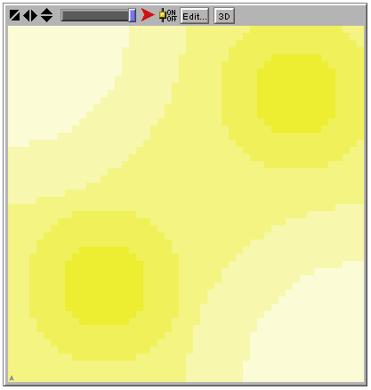
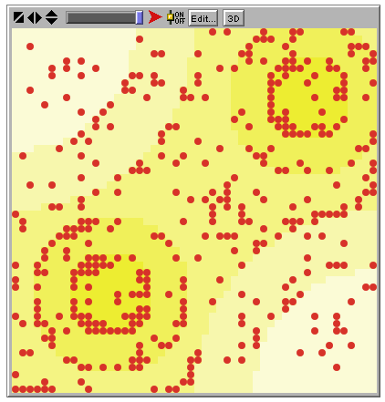
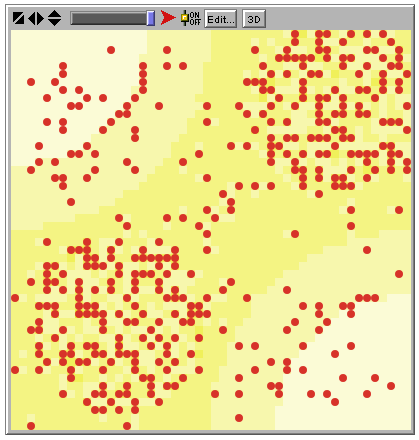
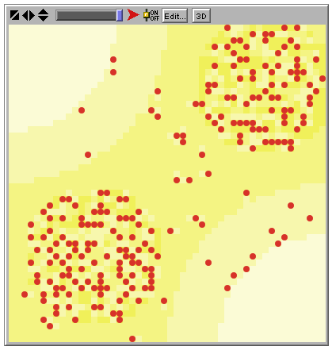
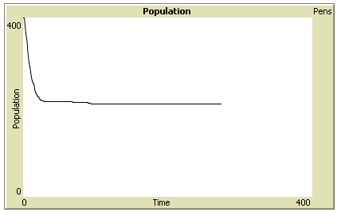
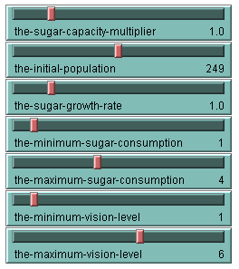

A Guide to Reconstructing Sugarscape
in the BehaviourComposer
Sugarscape is an artificial world with life, death, wealth, sex, culture, trade, and disease described in Growing Artificial Societies by Joshua M. Epstein and Robert Axtell, Brookings Institute Press, The MIT Press, 1996. Here we focus upon life, death, and wealth from chapter 2.
This guide to building Sugarscape was constructed by Ken Kahn.
7 May, 2009 Version
Building Sugarscape
Start by loading this: Initial Sugarscape Model. Use the Sugarscape Library to find and add behaviours to this model.
Step 1. Building the environment
You should be starting with the "empty" Sugarscape model where a few uninteresting technical details have been taken care of.
The Sugarscape environment needs to be initialised and given the behaviour of producing sugar. To do this you'll need to add INITIALISE-SUGAR-CAPACITY to the Sugarscape Environment so that each patch of the Sugarscape has a maximum sugar capacity, INITIALISE-SUGAR-GROWTH-RATE to set the rate in which sugar grows, GROW-SUGAR-DELAYED to grow the sugar, and UPDATE-PATCH-COLOUR so the patches are coloured to reflect the amount of sugar accumulated. All of these behaviours should be added to the environment (Sugarscape Environment). They can be added in any order. Click on the RUN button and then NetLogo's go button. The Sugarscape Environment should be initialised and quickly grow sugar up to the capacity of each patch. It should look like this after a few seconds:

Step 2. Creating an Agent
Next we will create an agent to live in the Sugarscape. (Actually it is already there as a coloured triangle in the lower left corner, here you will give it an appearance and initial attributes. Add a behaviour to the Agent to initialise it (you'll find these behaviours in the Sugarscape Agents section of the Sugarscape Library Search the Appearance and Movement sections to give the Agent prototype an initial random position, and the shape and colour that you prefer.
Step 3. Make the Agent Move
Add a behaviour from the Sugarscape section to make the Agent move to the nearest patch with the most sugar that it can see. Note that you also need to add a behaviour that defines the preference of the Agent for patches with more sugar. When you run the model, you may see the Agent move a little bit before it stops. You can produce different "trials" by clicking on the setup button followed by the go button. Think about why it doesn't keep moving or sometimes doesn't move at all.
Step 4. Creating a Population
Add a behaviour to Agent (to make 399 copies of the Agent) to initialise the population of 400 agents. Running the model should show the agents stopping with a pattern similar to this:

Step 5. Collecting and Consuming Sugar
Give the agents the behaviours of collecting and consuming sugar. Why do they keep moving the way they do? A typical snapshot should look like:

Step 6. Starving Agents
When agents have no sugar to consume they should die. Add a Sugarscape section micro-behaviour to Agent. After a while the model will look like the following. Think about why the agents on the lightest shade of yellow don't move.

Step 7. Graphing the Population
Add a graph of the total population versus elapsed time. This behaviour should be given to the Sugarscape Environment. The graph should look like the following. Think about why it drops and then levels off.

Step 8. Add a Histogram of Accumulated Sugar
Add a histogram of the distribution of wealth (i.e. sugar) of the population to the Sugarscape Environment.
Step 9. Add a Lorenz Curve and a Monitor for the Gini Coefficient
These are additional tools for observing the distribution of wealth in the Sugarscape. See page 36 of Growing Artificial Societies. Add these behaviours to the Sugarscape Environment. Note that the behaviour for drawing the Lorenz curve needs another behaviour to provide the empty plot upon which to draw.
Step 10. Add Monitors for Vision Level and Sugar Metabolism
Notice how the vision level and sugar metabolism change as the model runs. While these are statistics for all agents we don't want each agent computing these so add them to the Sugarscape Environment.
Step 11. Run some Experiments
You can change values of parameters by using any of these sliders:

We will study how these parameters affect the Gini coefficient and the carrying capacity of the environment (the stable size of the population). Run experiments to discover how to make large and small Gini coefficients. Experiment to see which factors influence the carrying capacity. Explore how repeated runs with the same parameters differ to the stochastic nature of the models.
As you do these experiments enter the values of the sliders and value of the Gini coefficient and the carrying capacity (i.e. the population which you can read from the graph) at time 50 in this form. Your simulation should automatically pause at time 50. To enter subsequent values you may wish to use the browser's back button to edit the values you enter on the previous experiment.
Step 12. Replacing Dying Agents
Add a behaviour so new agents are created when an agent dies. See how this affects the dynamics of the mean vision level, the mean sugar metabolism, and the wealth distribution. Change the total population to 250 for creating the initial population.
Step 13. Limited Lifetimes
Give the agents behaviours so they die when they reach their lifespan. See how this affects the dynamics of the mean vision level, the mean sugar metabolism, and the wealth distribution. Note that the way aging is modelled this will begin to have an effect after 60 time steps.
Step 14. Production Causes Pollution
Add behaviours so that sugar production causes pollution. Change the way agents move so they tend to avoid polluted areas. Observe the modified dynamics. Note that the production of pollution doesn't begin before 50 time steps. Sugar production is done by the Sugarscape Environment.
Step 15. Consumption Causes Pollution
Add behaviours so that sugar consumption causes pollution. This also begins after 50 time steps. Sugar consumption is done by each agent.
Step 16. Diffusing Pollution
Add a behaviour to the Sugarscape Environment so that after 100 time steps pollution starts to diffuse to neighbouring sites.
Step 17. Analyse the Data
The data entered at Step 11 by you and your classmates has been accumulated in this spreadsheet. Click on File then Export to create a spreadsheet file you can analyse. What conclusions can you draw from the results?
Step 18. Please let us know what you think.
This software is under development at Oxford University. And please help us make it better by filling out this questionnaire.
Step 19. If you have time, explore the space of possible Sugarscape models or run more experiments.
For example, replace the behaviour for growing sugar with one that has differential seasonal growth rates. Or replace the initial distribution of the population with one where everyone starts in the Southwest corner. Or further explore the parameter space. NetLogo has a tool for automating the exploration of the parameter space. You can download NetLogo and run your model there. Click on Tools and BehaviorSpace to try it out.